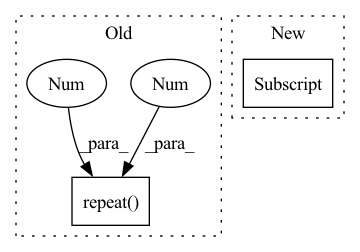

Pattern ID :249
Before Change
def forward(self, x):
if self.has_mean:
batch_size = x.data.size(0)
x = x - torch.autograd.Variable(self.mean_img.repeat( batch_size, 1, 1 , 1 ) )
ind = -2
self.loss = NoneAfter Change
self.loss = self.loss + self.models[ind](x)
else:
self.loss = self.models[ind](x)
outputs[ind] = None
elif block["type"] == "yolo":
if self.training:
passIn pattern: SUPERPATTERN
Frequency: 5
Non-data size: 2
Instances Fragment ID: 904685
Project Name: tianxiaomo/pytorch-yolov4
Commit Name: cf696adb6de3e2a8f68498ff9f2586f2ef62df3a
Time: 2020-04-25
Author: 1025568329@qq.com
File Name: tool/darknet2pytorch.py
M Class Name: Darknet
N Class Name: Darknet
M Method Name: forward(2)
N Method Name: forward(2)
M Parent Class: nn.Module
N Parent Class: nn.Module
M File Name: tool/darknet2pytorch.py
N File Name: tool/darknet2pytorch.py
M Start Line: 101
M End Line: 149
N Start Line: 114
N End Line: 172
Before Change
concat_aligned_img_feature = img_feaure[:, None, :].repeat(1 , T_1, 1 )
concatenated_features = torch.cat((trajectories_past, concat_aligned_img_feature), dim=2) // (N, T_1, 3 + 16)
output = self.transformer(src=concatenated_features, tgt=trajectories_future, tgt_mask=tgt_mask) // (N, T_2, 3)
return output
After Change
// img (N, T_1, 3, 100, 100) -> CNN -> (N, T_1, 16)
for t in range(T_1):
concat_aligned_img_feature[:, t, :] = self.cnn(images_past[:, t, :, :, :])
// trajectory_history: (N, 10, 3) Fragment ID: 904684
Project Name: xushenlz/parksim
Commit Name: 129fa27deb5d6a07e01c3a149cfb22ffcef91ed2
Time: 2022-03-11
Author: xushen0118@outlook.com
File Name: python/parksim/trajectory_predict/vanilla_transformer/network.py
M Class Name: TrajectoryPredictTransformerV1
N Class Name: TrajectoryPredictTransformerV1
M Method Name: forward(5)
N Method Name: forward(5)
M Parent Class: nn.Module
N Parent Class: nn.Module
M File Name: python/parksim/trajectory_predict/vanilla_transformer/network.py
N File Name: python/parksim/trajectory_predict/vanilla_transformer/network.py
M Start Line: 161
M End Line: 174
N Start Line: 162
N End Line: 177
Before Change
for i in source_ids]
source_alphas = F.softmax(source_alphas)
output_moe = sum([ alpha.unsqueeze(1).repeat(1 , 1 ) *
F.softmax(classifier_outputs[id], dim=1)
for alpha, id in zip(source_alphas, source_ids)])
return output_moeAfter Change
for i in source_ids]
source_alphas = F.softmax(torch.cat(source_alphas, dim=0), dim=0) // n_source x bs
output_moe = sum([ source_alphas[j].unsqueeze(1).repeat(1, 1) *
classifier_outputs[j] for j in source_ids])
return output_moe
def compute_domain_encs(self, all_train_smiles): Fragment ID: 904665
Project Name: aamini/chemprop
Commit Name: cf8ea2e781c32716964835d39a9cc4562c75b677
Time: 2018-10-28
Author: yangk@mit.edu
File Name: moe.py
M Class Name: MOE
N Class Name: MOE
M Method Name: forward(2)
N Method Name: forward(2)
M Parent Class: nn.Module
N Parent Class: nn.Module
M File Name: moe.py
N File Name: moe.py
M Start Line: 114
M End Line: 125
N Start Line: 142
N End Line: 151
Before Change
f1 = self.mlp1(input)
f2 = self.mlp2(f1)
context_vector = self.maxpool(f2)
Gf1 = torch.cat((context_vector.repeat(1 , 1 , self.input_cloud_size) , f1), 1)
scores = self.mlp3(Gf1)
logits = self.softmax(scores)
After Change
f1 = self.mlp1(input)
f2 = self.mlp2(f1)
context_vector = torch.max(f2, 1)[0]
input_size = f1.shape[1]
expanded_context_vector = torch.unsqueeze(context_vector, 1).expand(-1, input_size, -1)
Gf1 = torch.cat((expanded_context_vector, f1), 2)
scores = self.mlp3(Gf1) Fragment ID: 904680
Project Name: ignf/myria3d
Commit Name: d06a0f0b88ee66f879e3d148f4c4b63f49ab16c1
Time: 2021-09-22
Author: charles.gaydon@gmail.com
File Name: semantic_val/models/modules/point_net.py
M Class Name: PointNet
N Class Name: PointNet
M Method Name: forward(2)
N Method Name: forward(2)
M Parent Class: nn.Module
N Parent Class: nn.Module
M File Name: semantic_val/models/modules/point_net.py
N File Name: semantic_val/models/modules/point_net.py
M Start Line: 45
M End Line: 47
N Start Line: 43
N End Line: 48